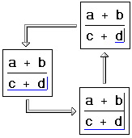
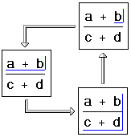

Key Movement in Math |
[F9] Recalculate a selected region
[Ctrl] [F9] Recalculate entire worksheet
[Ctrl] E Open the Insert Function dialog box.
[Ctrl] U Open the Insert Unit dialog box.
[Ctrl] [Shift] J Type characters inside brackets as in chemistry notation.
[Ctrl] [Shift] K Type characters that usually insert operators.
Moves the editing lines into the blank space below.
If the math does not contain operators, pressing the spacebar changes the math region into a text region. Use the Spacebar key to select different parts of a math expression. What you select depends on the starting location of the editing lines. For example:
 
Moves to the next placeholder. If there are no more placeholders, the editing lines turn into a crosshair at the next tab stop to the right.
[Shift] [Tab] Moves to the previous placeholder. If there are no more placeholders, the editing lines turn into a crosshair in the next tab stop to the left.
Moves the editing lines to the beginning of the expression.
Moves the editing lines to the end of the expression.
Moves the editing lines one character to the left. At the beginning of an expression, they move into the empty space to the left.
[Ctrl] Left Arrow Moves the vertical editing line to the left of the horizontal editing line.
[Shift] Left Arrow Selects more of an expression to the left of the editing lines.
Moves the editing lines one character to the right. At the end of an expression, they move into the empty space to the right.
[Ctrl] Right Arrow Moves the vertical editing line to the right of the horizontal editing line.
[Shift] Right Arrow Selects more of an expression to the right of the editing lines.
Moves the editing lines up. At the top of the expression, they move into the blank space above.
Moves the editing lines down. At the bottom of the expression, they move into the blank space below.